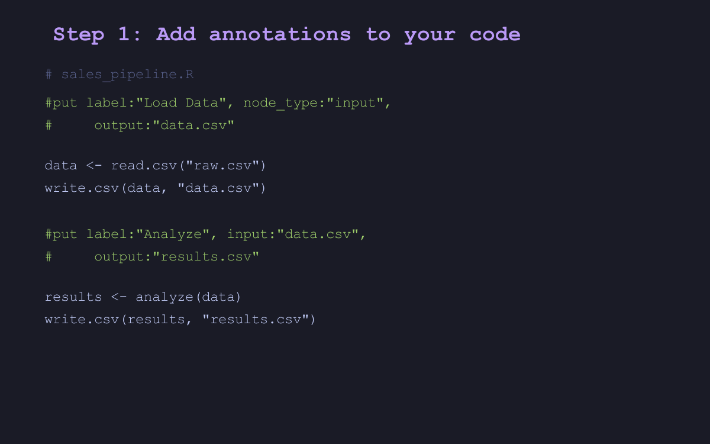

Extract beautiful workflow diagrams from your code annotations

putior (PUT + Input + Output + R) extracts structured annotations from source code and generates Mermaid flowchart diagrams. Document data pipelines, visualize workflows, and understand complex codebases – across 30+ programming languages.
TL;DR
# 1. Add annotation to your script
# put label:"Load Data", output:"clean.csv"
# 2. Generate diagram
library(putior)
put_diagram(put("./"))See result
flowchart TD
node1[Load Data]
artifact_clean_csv[(clean.csv)]
node1 --> artifact_clean_csv
classDef processStyle fill:#ede9fe,stroke:#7c3aed,stroke-width:2px,color:#5b21b6
class node1 processStyle
classDef artifactStyle fill:#f3f4f6,stroke:#6b7280,stroke-width:1px,color:#374151
class artifact_clean_csv artifactStyleKey Features
-
Simple annotations – one-line comments in your existing code (
# put label:"...") - Beautiful Mermaid diagrams – 9 built-in themes including colorblind-safe viridis family
- 30+ language support – R, Python, SQL, JavaScript, TypeScript, Go, Rust, and more with automatic comment syntax detection
-
Auto-detection –
put_auto()analyzes code without annotations;put_generate()creates annotation skeletons;put_merge()combines both -
Lightweight – only depends on
tools(base R)
Installation
# Install from CRAN (recommended)
install.packages("putior")
# Or install from GitHub (development version)
remotes::install_github("pjt222/putior")
# Or with renv
renv::install("putior") # CRAN version
renv::install("pjt222/putior") # GitHub version
# Or with pak (faster)
pak::pkg_install("putior") # CRAN version
pak::pkg_install("pjt222/putior") # GitHub versionExample: Multi-Language Data Pipeline
putior connects scripts across languages by tracking input and output files:
01_fetch.R
# put id:"fetch", label:"Fetch Sales Data", node_type:"input", output:"raw_sales.csv"
sales <- fetch_sales_from_api()
write.csv(sales, "raw_sales.csv")02_clean.py
# put id:"clean", label:"Clean and Validate", input:"raw_sales.csv", output:"clean_sales.csv"
import pandas as pd
df = pd.read_csv("raw_sales.csv")
df.dropna().to_csv("clean_sales.csv")03_report.sql
-- put id:"report", label:"Generate Summary", node_type:"output", input:"clean_sales.csv"
SELECT region, SUM(amount) FROM clean_sales GROUP BY region;Generate the diagram:
library(putior)
workflow <- put("./pipeline/")
put_diagram(workflow, theme = "github")Result:
flowchart TD
fetch_sales(["Fetch Sales Data"])
clean_data["Clean and Process"]
%% Connections
fetch_sales --> clean_data
%% Styling
classDef inputStyle fill:#dbeafe,stroke:#2563eb,stroke-width:2px,color:#1e40af
class fetch_sales inputStyle
classDef processStyle fill:#ede9fe,stroke:#7c3aed,stroke-width:2px,color:#5b21b6
class clean_data processStyleLearn More
Explore the full documentation at the pkgdown site.
Getting Started
| Guide | Description |
|---|---|
| Quick Start | First diagram in 2 minutes |
| Annotation Guide | Complete syntax reference, multiline annotations, best practices |
Going Deeper
| Guide | Description |
|---|---|
| Features Tour | Auto-detection, themes, logging, interactive diagrams |
| Showcase | Real-world examples (ETL, ML, bioinformatics, finance) |
Reference
| Guide | Description |
|---|---|
| API Reference | Complete function documentation |
| Quick Reference | At-a-glance reference card |
| Troubleshooting | Common issues and solutions |
| AI Integration | MCP/ACP integration for AI assistants |
How putior Compares
putior fills a unique niche by combining annotation-based workflow extraction with Mermaid diagram generation:
| Package | Focus | Approach | Output | Best For |
|---|---|---|---|---|
| putior | Data workflow visualization | Code annotations | Mermaid diagrams | Pipeline documentation |
| CodeDepends | Code dependency analysis | Static analysis | Variable graphs | Understanding code structure |
| DiagrammeR | General diagramming | Manual diagram code | Interactive graphs | Custom diagrams |
| visNetwork | Interactive networks | Manual network definition | Interactive vis.js | Complex network exploration |
| dm | Database relationships | Schema analysis | ER diagrams | Database documentation |
| flowchart | Study flow diagrams | Dataframe input | ggplot2 charts | Clinical trials |
Documentation vs Execution
A common question: “How does putior relate to targets/drake/Airflow?”
putior documents workflows; targets/drake/Airflow execute them. They are complementary – you can annotate a targets pipeline with # put comments and use putior to generate visual documentation for your README or wiki.
| Tool | Purpose | Relationship to putior |
|---|---|---|
| putior | Document and visualize workflows | – |
| targets | Execute R pipelines | putior can document targets pipelines |
| drake | Execute R pipelines (predecessor to targets) | putior can document drake plans |
| Airflow | Orchestrate complex DAGs | putior can document Airflow DAGs |
| Nextflow | Execute bioinformatics pipelines | putior can document Nextflow workflows |
Self-Documentation
putior uses its own annotation system to document its internal workflow – a real demonstration of the package in action. Running put("./R/") on putior’s own source code produces this diagram:
---
title: putior Package Internals
---
flowchart TD
diagram_gen[Generate Mermaid Diagram]
styling[Apply Theme Styling]
node_defs[Create Node Definitions]
connections[Generate Node Connections]
output_handler([Output Final Diagram])
put_entry([Entry Point - Scan Files])
process_file[Process Single File]
validate[Validate Annotations]
parser[Parse Annotation Syntax]
convert_df[Convert to Data Frame]
%% Connections
put_entry --> diagram_gen
convert_df --> diagram_gen
node_defs --> styling
put_entry --> node_defs
convert_df --> node_defs
node_defs --> connections
diagram_gen --> output_handler
process_file --> validate
process_file --> parser
parser --> convert_df
%% Styling
classDef processStyle fill:#ede9fe,stroke:#7c3aed,stroke-width:2px,color:#5b21b6
class diagram_gen processStyle
class styling processStyle
class node_defs processStyle
class connections processStyle
class process_file processStyle
class validate processStyle
class parser processStyle
class convert_df processStyle
classDef startStyle fill:#fef3c7,stroke:#d97706,stroke-width:3px,color:#92400e
class put_entry startStyle
classDef endStyle fill:#dcfce7,stroke:#16a34a,stroke-width:3px,color:#15803d
class output_handler endStyleContributing
Contributions welcome! Please open an issue or pull request on GitHub.
License
This project is licensed under the MIT License – see the LICENSE file for details.
Acknowledgments
Contributors
- Philipp Thoss (@pjt222) – Primary author and maintainer
- Claude (Anthropic) – Co-author on 38 commits, contributing to package development, documentation, and testing
While GitHub’s contributor graph only displays primary commit authors, Claude’s contributions are attributed through Co-Authored-By tags. See: git log --grep="Co-Authored-By: Claude"
Related Packages
- CodeDepends – R code dependency analysis
- targets – pipeline toolkit for reproducible computation
- DiagrammeR – graph visualization in R
- ggraph – grammar of graphics for networks
- visNetwork – interactive network visualization
- dm – relational data model visualization
- flowchart – participant flow diagrams
- igraph – network analysis foundation
Built with Mermaid for diagram generation.
Made for polyglot data science workflows across R, Python, Julia, SQL, JavaScript, Go, Rust, and 30+ languages